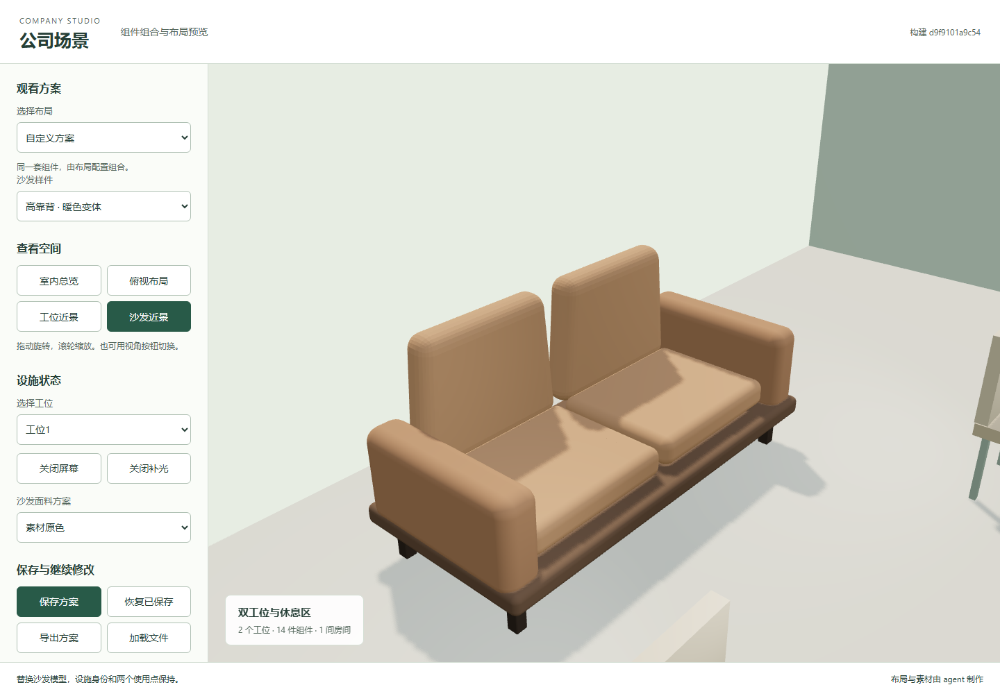
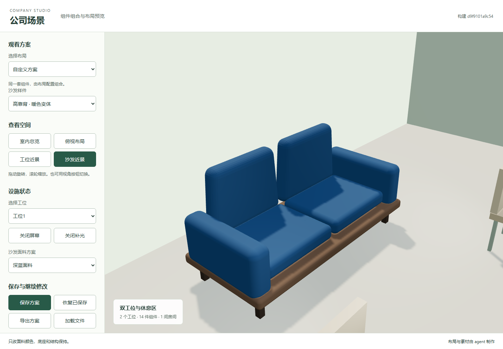
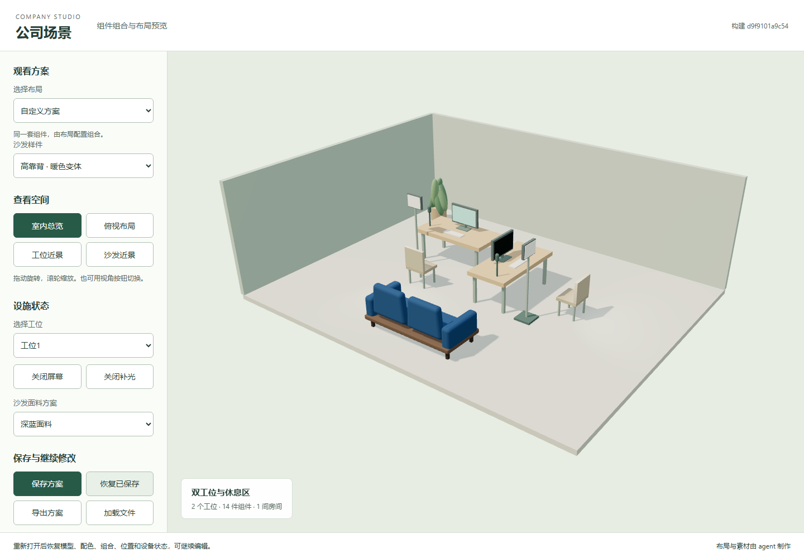

COMPANY STUDIO · 制作与预览候选组件组合成不同的公司场景
这次新增的是实际创作能力：接入新模型，替换外观，独立修改面料，复制整套工位，调整整体和部件位置，并保存后继续修改。
下方是同一个固定版本的正常速度演示。当前展示场景与设施生产；真实角色的活动和设施使用留到 C3 统一接入验证。

替换模型，保留设施身份和两处使用点
修改面料颜色，保留底座和结构
复制、转向和局部布置后的完整恢复源码 5a9760353480c120082b25d597c634e8794b91e1 · 构建 d9f9101a9c54。工程检查与关键画面已核；用户观感尚待观看。开发机数据不代表普通电脑性能。
复现命令与工程记录
固定检出已经位于 F:/gamemake-company-c1-fixed-0ce817e，实际 HEAD 为上方 5a97603。运行服务使用系统分配的临时端口，退出即关闭。
cd F:/gamemake-company-c1-fixed-0ce817e/prototype
node scripts/build-company-id.mjs
npx vite build --config vite.company.config.js
cd ..
node scripts/company-platform/serve-company.cjs prototype/dist-company d9f9101a9c54
# 在新的输出目录重复实际浏览器检查
node scripts/company-platform/qa-preview.cjs prototype/dist-company d9f9101a9c54 output/playwright/c1-recheck-NEW
固定源码与重建清单 · 实际浏览器检查 · 演示步骤与版本 · 可继续编辑的方案